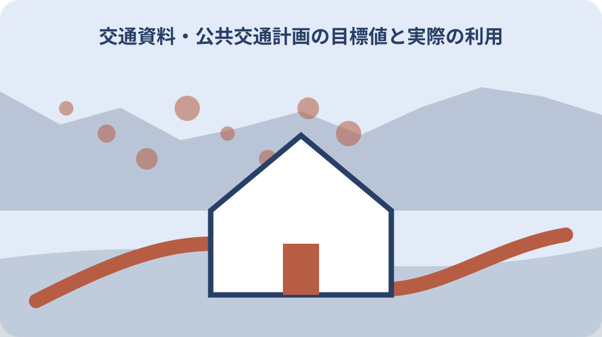

先に結論を確認する
この記事の答え：違います。計画には2022年度実績と2028年度目標が並ぶため、年度と区分を付けて読みます。
森町で最初に照合する条件：目標値を引用するときは、2022年度実績と2028年度目標のどちらかを明記する。
計画値と運行情報を最初に分ける
森町地域公共交通法定計画は、2024年度から2028年度までに町が目指す交通の姿を示す中期資料です。ここに載る利用者数や導入地区数は、今日の便が走るか、何時に乗れるかを答える運行案内ではありません。最初に「計画の目標を読む」のか「当日の移動手段を探す」のかを分けます。
計画値を調べるときは計画本編、当日の時刻や運休を調べるときは森町の公共交通案内から各運行者の最新ページへ進みます。同じバスの話でも資料の役割が違います。計画書の日付が新しく見えても、日々の運行変更を反映しているとは限りません。
家族の通院や通学を決める場面では、先に現在の便と帰宅手段を確保し、その後に計画値を地域の将来像として読みます。反対に会議資料を評価するときは、臨時運休の一件だけで計画全体を判断しません。問いに合う資料を一つ目に置くことが、数字の取り違えを防ぎます。
確認表は「中期目標」「直近評価」「当日運行」の三列に分けます。310,000人などの数値は中期目標、会議資料の途中値は直近評価、時刻や運休は当日運行へ置き、別列の情報から空欄を補いません。計画PDF、会議資料、運行者ページのURLと確認日も列ごとに残せば、更新時にどの数字を見直すべきか判断できます。
計画区域と5年間の対象期間
計画区域は森町全域です。ただし、町内のすべての地区に同じ路線、同じ本数、同じ利用条件があるという意味ではありません。区域は計画が扱う地理的範囲を示し、個別の停留所や運行区域は交通手段ごとの案内で確かめます。
対象期間は2024年度から2028年度までの5年間です。2028年度目標を2028年1月時点の確定実績として扱うことはできません。年度表記なので、暦年の1月から12月と読み替えず、会議資料に示された集計期間も合わせて確認します。
基本理念は持続可能なまちづくりを支える公共交通の構築です。計画は学校統廃合に伴うバス通学と高齢化を背景に挙げています。子どもの通学と高齢者の移動という異なる需要を一つの利用者数だけで説明せず、各指標がどの課題に結び付くかを読み分けます。
期間内に生活条件が変わる家庭は、2028年度まで同じ交通手段が使えると仮定しません。進学、免許返納、通院先変更の時期ごとに現在情報を確認し、計画期間は見直し資料を追う範囲として扱います。
2022年度実績を基準に読む
計画の数値表では2022年度実績が出発点です。広域路線バス309,804人、町営バス9,098人、交通空白地域への新たな交通手段0地区、利用券助成92件、移動支援の協力会員15人が同じ基準年度に並びます。単位は人、地区、件と異なります。
基準値と目標値の差を計算するなら、広域路線バスは196人増、町営バスは98人少ない値、利用券助成は118件増、協力会員は20人増です。ただし、この差だけで達成の難しさや事業の成否は決まりません。算定対象と途中年度の実績が必要です。
引用時には必ず「2022年度実績」と書きます。数字だけを家族のメモや表へ移すと、現時点の利用者数や一日当たり人数に見えてしまいます。元表の指標名、単位、年度を一組で残し、後で直近資料と同じ条件で比べられる形にします。
直近値が見つからない場合は、2022年度値を現在値として延長しません。「基準値は確認済み、途中実績は未確認」と分け、次に開く会議資料の年度を指定します。数値がないこと自体も確認結果です。
広域路線バス310,000人の意味
広域路線バス3系統の利用者数は、2022年度309,804人に対して2028年度310,000人が目標です。目標は約31万人という水準を保つ形で、単純な大幅増加目標ではありません。3系統合計であるため、一つの路線の利用者数として引用しないようにします。
309,804人と310,000人の近さから「すでに達成」と断定するのも早計です。目標年度までの人口、通学、運行内容の変化を含めて維持できるかが論点になります。直近値を探すときは、3系統の範囲と集計方法が基準値と同じかを会議資料で照合します。
日常利用へ置き換える際は、年間合計を便の混雑や自宅最寄り停留所の利便性と同一視しません。家族が使えるかは路線、停留所、曜日、時刻、乗継で別に確認します。計画目標は交通網全体の評価材料、時刻表は一回の移動判断の材料です。
3系統の内訳が資料にない場合、利用者を三等分して各路線の値にしません。知りたい路線の実績が必要なら、会議資料の内訳表を探し、掲載がなければ担当窓口へ指標の範囲を尋ねます。
町営バス9,000人の意味
町営バス利用者数は2022年度9,098人、2028年度目標9,000人です。目標が基準値を98人下回ることだけを見て、町が利用減を目指していると解釈するのは適切ではありません。計画本文の取組と評価資料を合わせて読む必要があります。
この指標を広域路線バスの31万人と足したり、同じ増減率で評価したりする前に、対象となる交通手段を分けます。町営バスと民間の広域路線では運行主体や利用範囲が異なります。会議資料に実績が出たら、同じ「町営バス利用者数」の欄で比較します。
乗車を考える人は9,000人という年間目標から運行日を推測せず、町の交通案内で現在の路線情報へ進みます。停留所まで歩けるか、帰りの便があるか、家族送迎を併用するかを確認して初めて、個人の利用可否を判断できます。
9,098人から9,000人への差は約1.1パーセントですが、この計算は計画の意図を説明するものではありません。記事では差を示しても、維持目標か減少容認かという評価は本文や会議の説明なしに決めません。
交通空白地域2地区という指標
日中の公共交通空白地域へ新たな交通手段を導入した地区数は、2022年度0地区から2028年度2地区が目標です。これは既存路線の利用者数ではなく、交通手段を新たに導入した地区の数です。人ではなく地区が単位である点を先に押さえます。
2地区という目標から、対象地区名や導入方式を推測することはできません。計画の進捗資料で地区、開始時期、交通手段、対象者が示されているかを確認します。町全域が計画区域でも、自宅の地区が導入対象になったとは限りません。
移動に困っている世帯は、目標達成を待つだけでなく、現在利用できる町営バス、地域タクシー、公共交通以外の移動手段を町の案内から探します。将来の地区導入と今日の代替手段を別欄に置けば、未確定の計画を生活予定へ組み込む誤りを避けられます。
会議資料で導入候補が示された場合も、検討、実証、正式運行を同じ「導入」と数えないよう注記を確認します。2地区の達成状況を述べるなら、計画表が採用する算定段階にそろえます。
利用券助成210件という指標
森町公共交通利用券助成事業の申請数は、2022年度92件から2028年度210件が目標です。これは券の利用回数や利用者延べ人数ではなく、計画表で「申請数」とされた件数です。210人と読み替えず、申請単位を公式案内で確認します。
目標との差は118件ですが、対象者、受付期間、申請方法が変われば件数の意味も変わります。計画値だけで自分が対象者だと判断せず、当年度の助成案内で条件を確かめます。制度の存在を知る指標と、個別申請の可否を決める案内は別資料です。
家族の移動費を考えるときは、利用券を受け取れる前提で予算を組みません。対象条件、申請時期、使える交通手段を確認し、利用できない場合の費用も並べます。進捗評価では申請数が増えた理由まで資料にあるかを確認し、数字だけで需要増と断定しません。
申請数と交付数が別に示される資料では、210件目標と同じ欄を選びます。不受理や辞退を含むか分からない値を混ぜず、件数の定義が変わった場合は過年度との単純比較を保留します。
協力会員35人という指標
ボランティア移動支援の協力会員登録者数は、2022年度15人に対して2028年度35人が目標です。利用を希望する人の数ではなく、支援する側の登録者数を数える指標です。利用者数や運行回数と混同しないようにします。
20人増という差は、登録者が実際にいつ活動できるかまでは示しません。協力会員が35人に達しても、地区、曜日、時間帯が合わなければ個別の移動が成立しない場合があります。現在の利用条件は制度案内や担当窓口で別に確認します。
家族が移動支援を検討する場合は、対象者、対象範囲、予約、担い手の確保状況を確認します。会員数は地域の支え手を測る一つの材料ですが、特定日の送迎を保証する数字ではありません。頼れる場合と頼れない場合の帰宅手段を準備します。
登録者数の途中値を読む際は、年度末時点か累計登録かを確かめます。退会者を含む累計と現役会員数では意味が異なるため、35人目標と同じ数え方であることを資料の注記から確認します。
現在の交通手段を別ページで確認する
森町の公共交通案内は、町営バス、地域タクシー、公共交通以外の移動手段、鉄道・民間路線バス・タクシーを分けて案内しています。目的地を決めたら、計画本編ではなく、この入口から該当する現在情報へ進みます。
一回の外出では往路だけでなく復路も調べます。出発停留所、降車場所、運行曜日、最終便、予約の要否を確認し、複数の交通手段をつなぐなら乗継時間を見ます。計画の対象区域が町全域でも、各便が全域を走るわけではありません。
ページを家族へ共有するときは、検索結果の説明文ではなく運行者の公式ページと確認日時を伝えます。改定や運休があり得るため、前日に保存した画面だけで当日判断しません。特に通院や試験など変更しにくい予定では、代替手段の連絡先も控えます。
鉄道からバスへ乗り継ぐ場合は、別々の時刻表を同じ日付で確認します。平日、土休日、学校日などの区分が異なることがあるため、片方だけ平日ダイヤを選ぶ誤りを避けます。

会議資料から直近実績を探す
森町の地域公共交通会議ページは、年度ごとに開催日、会場、会議資料を公開しています。2025年度第1回は2025年7月29日に森町町民生活センターで開催されました。計画策定後の動きを追う入口として、年度順の資料を確認できます。
2024年度の会議資料には、計画の実施状況と事業計画が協議事項として含まれています。目標の進捗を知りたいときは、議題名だけで終わらず、添付表に同じ指標の直近実績、対象期間、評価があるかを探します。
国の案内では、地域公共交通計画を作成した地方公共団体による毎年度の実施状況の調査、分析、評価は努力義務とされています。ただし、会議開催日がそのまま実績の基準日とは限りません。資料内の年度と集計時点を引用に添えます。
会議資料が差し替えられる場合に備え、資料名、開催回、ページ番号、確認日を残します。議事録と配布資料で表現が違えば、数値は元表、評価理由は会議の説明というように出典の役割を分けます。
指標の算定範囲をそろえる
比較では名称が似ているだけで同じ指標と判断しません。広域路線バスは3系統合計、町営バスは別指標、利用券助成は申請件数、協力会員は登録者数です。年度、対象、単位の三点が一致して初めて基準値と直近値を並べます。
途中年度の資料に月別値や一部路線だけの値があれば、年間目標へそのまま並べません。月数を掛けた推計は公式実績ではないため、行うなら自分の試算だと明記します。欠測や集計範囲の変更がある場合は、差を成果と決める前に注記を読みます。
表へ転記する際は、指標名、値、単位、対象年度、出典ページを一行にします。310,000、9,000、2、210、35という数だけの一覧は意味を失います。会議資料で表現が変わったら、旧指標との対応が明示されているか担当ページで確かめます。
割合を出す場合は分母を明記します。利用券申請数を人口で割った割合と、対象者数で割った割合は別物です。公式資料が分母を示していなければ、独自の比率を計画の評価値として掲載しません。
大石の視点：計画値を家の移動条件へ落とす
計画を家族の判断へ使うときは、まず必要な移動を通学、通院、買物など具体的な目的に分けます。次に現在の路線と時刻を確認し、最後に計画の目標や会議資料を将来の変化を追う材料として加えます。この順なら目標値を運行保証と誤認しません。
森町内でも停留所までの距離、坂道、帰宅時間、送迎できる家族の有無で使いやすさは変わります。年間利用者数だけでは答えられないため、実際の出発地点から停留所までを確認し、雨天や夜間の代案も決めます。
今日できる確認は、町の公共交通案内で利用候補を一つ選び、往復の時刻と連絡先を控えることです。計画の進捗を知りたい人は、直近の地域公共交通会議資料で2022年度実績と同名の指標を探します。生活判断と計画評価を二本立てにすると、数字を実用へ正しくつなげられます。
私は、住宅の立地を考える際に年間利用者数だけで交通利便性を評価せず、玄関から停留所までの道、最終便、家族送迎の負担を現地で確かめるべきだと考えます。これは私見であり、計画書の評価ではありません。公的事実として示す利用者数と、現地確認から導く住宅ごとの判断は別欄に置きます。